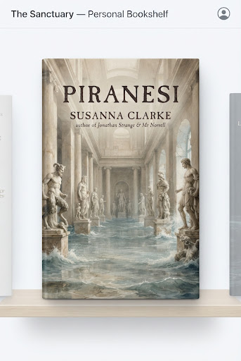

Cloth
Held Close
Piranesi
Susanna Clarke
5.0
Read: Oct 2024 · 245 pp
atmospheric
solitude
cozy autumn read
“The Beauty of the House is immeasurable; its Kindness infinite. Read during the autumnal equinox.”
Hearth Log #118